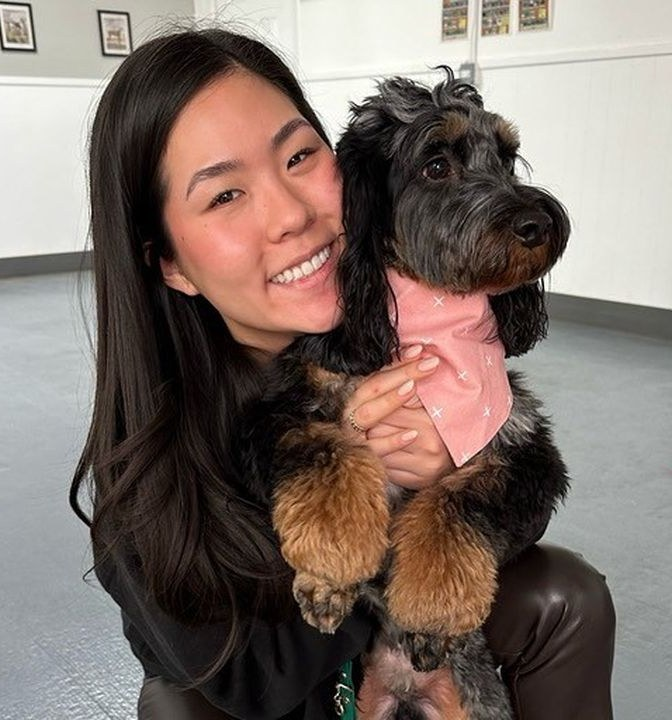

About
I'm a Chicago-based professional with seven years of experience across audience research, data analytics, and solutions engineering.
I started my career in consumer intelligence, helping brands and agencies understand their audiences and make more informed marketing decisions. I then moved into solutions engineering, where I work closely with customers, product teams, engineers, and commercial stakeholders.
What I enjoy most is figuring things out — whether that's understanding a customer problem, identifying patterns in data, bringing structure to a complex project, or exploring a new technology.
Outside of work, you'll usually find me playing tennis, cooking, taking photos, or spending time with my dog, KJ.
Background
Toolkit
↗ See the skill in practice in a case study.Product & Strategy
Data & Insights
- Consumer intelligence↗05
- Performance analysis↗06
- Data visualization↗05
- SQL & Databricks
- Tableau
- Excel & Google Sheets
Program & Execution
Technology & Innovation
Contact
Questions about my work, or just want to talk shop?
LinkedIn ↗ · Chicago, Illinois